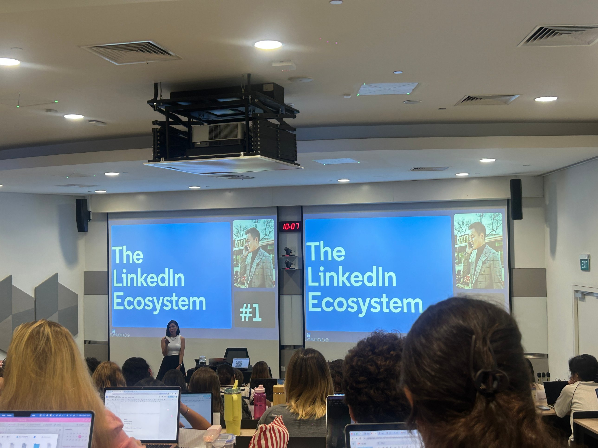

SEO to GEO
"LLMs shape what we see, and LinkedIn shapes what LLMs trust."
One ecosystem. One shift: from ranking in search to being trusted by AI.
Guest star Cindy Leong, Head of Scaled Agency Development, APAC at LinkedIn

Meet Cindy Leong.
Cindy Leong
Head of Scaled Agency Development, APAC · LinkedIn
Leads the Scaled Agency Team across APAC, empowering independent agencies
LinkedIn connects 0 billion members and 0 million companies worldwide
Builds strategies and tailored support that drive value for agencies' clients
Her session was about LinkedIn moving past a networking and recruiting platform, into an ecosystem for professional influence, B2B decision-making and AI-driven brand discovery.
LinkedIn ↗Stop optimizing for search.
Start optimizing for trust.
"If an AI can't retrieve it, did your content even happen?"
Cindy walked through the old funnel and the new one. Search, website click, decision used to be the whole path. Now it's ask AI, AI synthesizes, recommendation, and the brand's own website might never get a visit. The question changes from how do we rank higher, to how do we become a source AI trusts enough to cite. Figures and rankings in this session are the speaker's own, not independently verified.
How AI reads you.
Search
Type a question into Google.
Website click
Land on a brand's own page.
Decision
Compare, then decide.
Ask AI
Ask ChatGPT or an AI overview instead.
AI synthesizes
It reads many sources and writes the answer itself.
Recommendation
The brand may get named and never get a click.
Can AI trust you?
Experience
First-hand knowledge, real-world usage, testimonials and practical examples.
Expertise
Content made by people with real professional knowledge and credibility.
Authoritativeness
Recognised sources, company publications, respected experts and outside references.
Trustworthiness
Accurate, consistent, well-supported and transparent information.
Useful content-quality principles, not one single scoring system every AI uses the same way.
Get Cited.
"A fintech brand needs a post. Build one an AI would actually cite."
Which headline goes out?
Get Cited.
A fintech brand needs a LinkedIn post. Pick the headline, the structure and the evidence. At the end, find out if an AI assistant cites it, or scrolls past.
Not LinkedIn. A class simulation of its feed, built for this project.
What I took home.
LinkedIn is not just a jobs board anymore.
It's becoming a knowledge and commercial ecosystem: a publisher, a B2B marketing channel, and now a source AI assistants read from directly when they answer a question.
Build trust before the buyer starts looking.
The 95:5 rule says only 5% of B2B buyers are in-market at any moment. The other 95% are who brand building is actually for, long before anyone searches.
In traditional digital marketing, brands competed to be found. In AI-mediated discovery, brands compete to be understood, trusted and recommended.
— Cindy Leong
Being cited isn't the same as going viral.
A post with 20,000 likes doesn't automatically answer a professional's question. What gets cited is useful, specific and credible, not just popular.